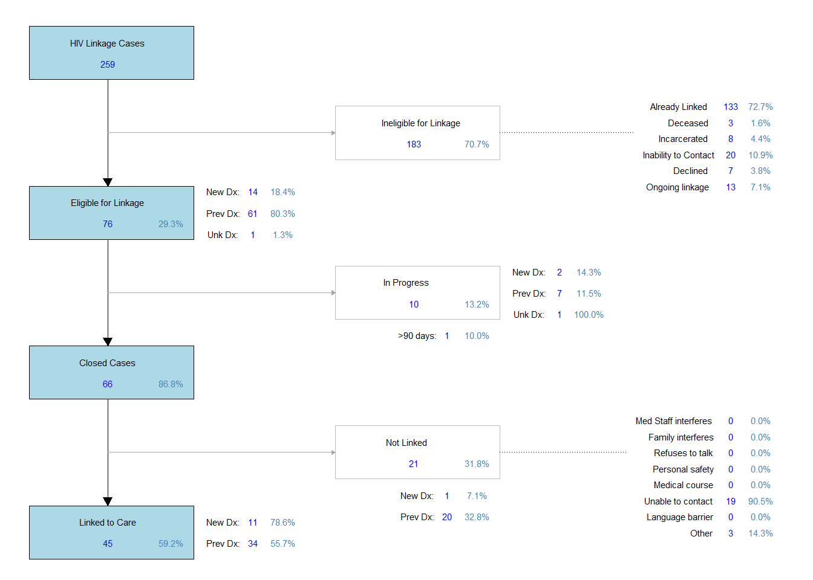

| EHE | |
|---|---|
| Number of Tests | 344 |
| Positives | 0 |
| New Positives | 0 |
| Positivity Rate | 0.00% |
EHE Deliverables (2023/2024)
The Ending the HIV Epidemic (EHE) testing program…(plan to provide an overall description and background for EHE).
EHE testing is reported on a monthly basis. The report sent to the Ohio Department of Health (ODH) each month consists of the total number of EHE-funded tests, and how many individuals were newly diagnosed with HIV from testing. The ODH report is divided into two different files, one comprising the aggregate data for testing by site, and the positivity data report by site. The aggregate data is further divided into several tabs, each depending on the site where the test occurred. The aggregate data report is essentially divided by the two ED testing sites (UCMC and WCH), the community sites (termed non-traditional testing venues), and the syringe exchange sites. It also consists of the demographic and population data for those tested at those sites. The positivity report identifies the total number of positive tests done at each site per month. The table to the right shows the total number of EHE tests and the overall positivity rate. The figure below shows the monthly EHE testing numbers.
It is important to note that there may be a few duplicated tests due to the transition to the new year, and records being in both the 2023 and 2024 databases if an open linkage case from 2023 is actively being worked in the 2024 database. Continuous review and data cleaning occurs until all cases from the prior year are closed.
EHE Deliverables Summary
The deliverables highlighted below are the numbers that were noted on the 2023 EHE Workplan as what our program would accomplish within the year of funding awarded. The data shown below covers EHE program deliverables starting August 1st, 2023 through July 31st, 2024. A summary table of the EHE deliverables, the number of each deliverable achieved, and the percent of the deliverables met are shown below:
| EHE Deliverable | Achieved | Goal | % |
|---|---|---|---|
| PLWHA | |||
| PLWHA not in care | 76 | 30 | 253.3% |
| % PLWHA linked | 59.2% | 80% | |
| MSM | |||
| MSM assessed | 104 | 60 | 173.3% |
| MSM tested | 15 | 60 | 25.0% |
| MSM tested at UCMC | 0 | 40 | 0.0% |
| MSM tested at WCH | 0 | 10 | 0.0% |
| MSM tested in Community | 15 | 10 | 150.0% |
| MSM/Youth tested | 8 | 40 | 20.0% |
| MSM/IDU tested | 1 | 10 | 10.0% |
| MSM new positive | 0 | 10 | 0.0% |
| HRHS | |||
| HRHS assessed | 626 | 450 | 139.1% |
| HRHS assessed at UC | 443 | 350 | 126.6% |
| HRHS assessed at WCH | 17 | 50 | 34.0% |
| HRHS assessed in Community | 166 | 50 | 332.0% |
PLWHA
The first impact objective encompasses population-based objectives centered around people living with HIV/AIDS (PLWHA) that are identified not in care. This objective has EIP staff identify those either newly diagnosed or previously diagnosed and determine whether they are out of care and require linkage to care services. This objective is inclusive of those who are women of color (WOC), youth (18-29 years old), and injection drug users (IDU). The statement for the actual deliverables promised for this objective is noted below:
- By May 31, 2024, EIP will identify 30 PLWHA not in care (newly and previously diagnosed) and provide Prevention with Positives and Linkage to Care services such that 80% are engaged in HIV medical care as prioritized by RFP workplan table. Of note, this number PLWHA includes newly diagnosed positives found by ED staff testing that, while apart from the core CTR, would not be possible absent the existence of the CTR (as detailed in Program Narrative).
From this statement, we specifically state deliverables for how many PLWHA who are out of care that will be identified by our program, and successfully link 80% of those individuals to care. Additional metrics were noted in this section, but no specific details on the numbers for those metrics were provided. Therefore, we stated we would monitor and report those as needed. These metrics are shown in the table under ‘Additional Metrics’.
PLWHA are identified in several different ways within the program, including: self-report of a positive test on assessment of prior HIV testing history, reason for offering an HIV test was due to a prior HIV positive result, declining an HIV test due to prior positive result, a final positive result through HIV testing, or having an HIV linkage case open with a new or previous HIV status. EIP staff are meant to identify all PLWHA encountered through the program, and further follow-up and discussion are meant to determine who is currently out of care. The deliverable for all PLWHA identified out of care are those that are “eligible” to be linked to care. They are considered “ineligible” based on the following criteria: they are already linked to care, deceased, currently incarcerated, inaccurate contact information, or they declined EIP linkage services.
The total number of HIV linkage to care (LTC) cases initiated for PLWHA during this time period is 259, with the total number of “eligible” LTC cases for PLWHA being 76 (29.3% of all HIV LTC cases initiated, 76/259). Therefore, EIP has identified 76 PLWHA for the EHE deliverable, which is 253.3% of the total promise of 30. The total number of these “eligible” HIV LTC cases that have been successfully linked to care is 45, which is 59.2% of those “eligible” (45/76).
We do not separate linkage numbers based on the HIV testing program (CTR/EHE), so these numbers are pulled the same as the numbers that are reported for the linkage deliverables for the CTR program. The difference in the reported numbers are due to the timeframe for EHE deliverables, as mentioned in the CTR PLWHA section. Current CTR deliverables are for data collected between 1/1/2023-5/31/2024 and current EHE deliverables are for data collected between 8/1/2023-5/31/2024. The HIV Linkage flow diagram for the EHE deliverable timeframe is shown below to provide an understanding of where the linkage numbers are coming from.

MSM
There were additional deliverables made for population-based objectives, and the first focuses on those who identify as men who have sex with men (MSM). Individuals are only identified as a part of this population group if they complete the necessary portions on the EIP assessment. The statement for the actual deliverables promised for this objective is noted below:
- By May 31, 2024, EIP will identify 60 MSM for risk-assessment and prevention intervention including client-centered risk reduction counseling and PrEP education/referral. EIP will provide HIV testing to 60 MSM, inclusive of the following (40 UCMC site, 10 WCH site, 10 community/outpatient sites; 40 Youth (18-29), and 10 IDU). EIP will identify 10 HIV(+) MSM for the PLWHA program (Workplan Form 4, Part 1). Of note, this does not include MSM PLWHA who are either previously diagnosed or those newly diagnosed by usual ED staff apart from CTR.
From this statement, we specifically state deliverables for how many MSM will be assessed for risk and/or need, and how many MSM will be tested using EHE-funded tests. Additionally, EIP states a specific number of tests at each site (UCMC, WCH, community sites). Additional metrics were noted in this section, but no specific details on the numbers for those metrics were provided. Therefore, we stated we would monitor and report those as needed. These metrics are shown in the table in the next section.
For those individuals who identify as a male, they are determined to be a MSM if they meet at least one of the following criteria: their sexual orientation is homosexual or bisexual, they report sex with a male or a transgender male within the past year, or they are a PLWHA and their reported risk was MSM. The total number of individuals who are MSM that have been assessed during this time period is 104, which is 173.3% of the total promise of 60.
The total number of individuals who are MSM that have been tested through the EHE program is 15, which is 25.0% of the total promise of 60. In addition to the total number of tests, there were deliverables for the location where those tests were conducted. For the University of Cincinnati Medical Center (UCMC), this includes only those EHE tests that were conducted within the emergency department (UCMC ED). There were a total number of 0 EHE tests that were conducted at UCMC, which is 0.0% of the total promise of 40. For West Chester Hospital (WCH), this includes only those EHE tests that were conducted within the emergency department (WCH ED). There were a total number of 0 EHE tests that were conducted at WCH, which is 0.0% of the total promise of 10. For the community-based tests, this includes all tests that were conducted anywhere EIP operates that does not include one of the EDs (UCMC or WCH). There were a total number of 15 EHE tests that were conducted in the community, which is 150.0% of the total promise of 10.
While we do not separate the linkage data between the various testing programs, we can identify which testing programs identify new positive HIV diagnoses. According to the EHE workplan, EIP has promised to identify a certain number of individuals who are newly diagnosed for HIV. There were a total number of 0 EHE tests that resulted in a new positive diagnosis for the individual tested, which is 0.0% of the total promise of 10. This number of new positive diagnoses are only those that were tested through the EHE program, and this only considers new positive diagnoses, not those that were tested and later determined to be an individual known to be positive.
Finally, the EHE program addresses particular population groups for testing. Within the population of MSM, we additionally have deliverables for youth and IDU. For those that are considered in the youth population, EHE defines those between the age of 18-19 years old. However, EIP often encounters individuals younger than the age of 18, so the definition used here are those below the age of 29. There were a total number of 8 EHE tests where the individual was both MSM/Youth, which is 20.0% of the total promise of 40. For those that are considered in the IDU population, the individual needs to complete the necessary section within the EIP assessment. We define those who endorse injection drug use behavior ever in their lifetime on the NIDA-Modified ASSIST, or those who are HIV positive and their risk was injection drug use as a part of the IDU population. There were a total number of 1 EHE tests where the individual was both MSM/IDU, which is 10.0% of the total promise of 10.
HRHS
There were additional deliverables made for population-based objectives, and the second focuses on those who identify as heterosexual that are at high risk for contracting HIV by endorsing high-risk heterosexual sex (HRHS) behaviors. Individuals are only identified as a part of this population group if they complete the necessary portions on the EIP assessment. The statement for the actual deliverables promised for this objective is noted below:
- By May 31, 2024, UC EIP will identify 450 HRHS for risk-assessment and prevention intervention including 350 UCMC site, 50 WCH site, and 50 community/outpatient sites).
From this statement, we specifically state deliverables for how many HRHS will be assessed for risk and/or need, and state a specific number of assessments at each site (UCMC, WCH, community sites). Additional metrics were noted in this section, but no specific details on the numbers for those metrics were provided. Therefore, we stated we would monitor and report those as needed. These metrics are shown in the table in the next section.
For those individuals who identify as a heterosexual (men who have sex with women, or women who have sex with men), they are determined to be HRHS if they meet at least one of the following criteria: heterosexual women that have unprotected sex with men or MSM, heterosexual men/women that have sex with an IDU, an HIV positive partner, a STD positive partner, more than three partners, or heterosexual men/women that exchange money/drugs for sex.
The total number of individuals who are HRHS that have been assessed during this time period is 626, which is 139.1% of the total promise of 450. In addition to the total number of assessments, there were deliverables for the location where those assessments were conducted. For UCMC, this includes only those assessments that were accompanied by an EHE test that were conducted within the emergency department (UCMC ED). There were a total number of 443 EHE HRHS assessments that were conducted at UCMC, which is 126.6% of the total promise of 350. For WCH, this includes only those assessments that were accompanied by an EHE test that were conducted within the emergency department (WCH ED). There were a total number of 17 EHE HRHS assessments that were conducted at WCH, which is 34.0% of the total promise of 50. For the community-based assessments, this includes only those assessments that were accompanied by an EHE test that were conducted anywhere EIP operates that does not include one of the EDs (UCMC or WCH). There were a total number of 166 EHE HRHS assessments that were conducted in the community, which is 332.0% of the total promise of 50.
Additional EHE Metrics
Additional metrics still to code for:
- #/% of PLWHA assessed
- #/% of PLWHA tested for HCV
- Number of MSM approached
- #/% MSM tested for HCV
- #/% MSM linked for HCV
- #/% HRHS approached
- #/% HRHS HIV+